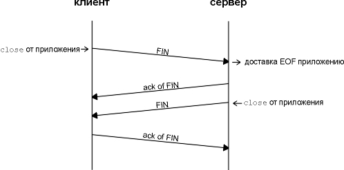
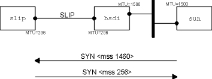
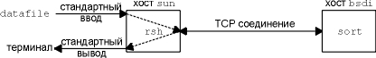
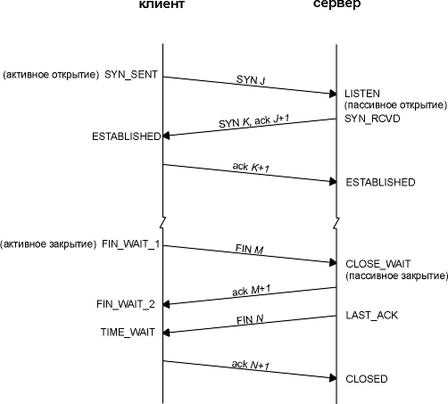

Глава 18 Установление и разрыв TCP соединения
TCP это протокол, ориентированный на соединение. Перед тем как какая-либо сторона может послать данные другой, между ними должно быть установлено соединение. В этой главе мы подробно рассмотрим, как устанавливается TCP соединение и как оно разрывается.
Так как для работы TCP необходимо установить соединение между двумя концами он отличается от протоколов без соединения, таких как UDP. В главе 11 мы видели, что при использовании UDP каждая сторона просто отсылает датаграммы другой, не установив перед этим соединения.
Установление и разрыв соединения
Для того чтобы посмотреть, что происходит при установлении и разрыве TCP соединения, мы исполнили на системе svr4 следующую команду:
svr4 % telnet bsdi discard
Trying 192.82.148.3 ...
Connected to bsdi.
Escape character is '^]'.
^]
вводим
Control, правую квадратную скобку,
telnet> quit
чтобы
Telnet клиент разорвал соединение
Connection closed.
Команда telnet устанавливает TCP соединение с хостом bsdi на порт, соответствующий discard сервису (глава 1, раздел "Стандартные простые сервисы"). Это как раз тот тип сервиса, который нам необходим, чтобы посмотреть, что происходит при установлении и разрыве соединения, но без обмена данными.
Вывод tcpdump
На рисунке 18.1 показан вывод tcpdump для сегментов, сгенерированных этой командой.
1 0.0
svr4.1037
> bsdi.discard: S 1415531521:1415531521 (0)
win
4096 <mss 1024>
2 0.002402 (0.0024)
bsdi.discard > svr4.1037: S
1823083521:1823083521 (0)
ack
1415531522 win 4096
<mss
1024>
3 0.007224 (0.0048) svr4.1037
> bsdi.discard: . ack 1823083522 win 4096
4 4.155441 (4.1482) svr4.1037
> bsdi.discard: F 1415531522:1415531522 (0)
ack
1823083522 win 4096
5 4.156747 (0.0013)
bsdi.discard > svr4.1037: . ack
1415531523 win 4096
6 4.158144 (0.0014)
bsdi.discard > svr4.1037: F
1823083522:1823083522 (0)
ack
1415531523 win 4096
7 4.180662 (0.0225) svr4.1037
> bsdi.discard: . ack 1823083523 win 4096
Рисунок 18.1 Вывод tcpdump для установления и разрыва TCP соединения.
Эти семь TCP сегментов содержат только TCP заголовки. Обмен данными не осуществлялся.
Для TCP сегментов каждая выходная строка начинается с
source > destination: flags (источник > назначение: флаги)
где флаги (flags) представляют собой четыре из шести флаговых битов TCP заголовка (рисунок 17.2). На рисунке 18.2 показаны пять различных символов, которые соответствуют флагам и могут появиться в выводе.
флаг |
3-символьное сокращение |
Описание |
S |
SYN |
синхронизирующие номера последовательности |
F |
FIN |
отправитель закончил передачу данных |
R |
RST |
сброс соединения |
P |
PSH |
отправка данных принимающему процессу настолько быстро, насколько это возможно |
. |
ни один из четырех флагов не установлен |
Рисунок 18.2 Символы флагов, выведенные командой tcpdump для флаговых битов в TCP заголовке.
В данном примере мы видим флаги S, F и точку. Еще два флага (R и P) появятся позже. Два других бита флагов в TCP заголовке - ACK и URG - напечатаны командой tcpdump.
В одном сегменте может присутствовать больше чем один из четырех флаговых битов, показанных на рисунке 18.2, однако, обычно взведен бывает только один флаг.
RFC 1025 [Postel 1987] называет сегмент, в котором максимальная комбинация всех доступных флаговых битов взведена одновременно (SYN, URG, PSH, FIN и 1 байт данных) пакетом Камикадзе (в английском языке существует еще несколько определений подобного пакета, а именно - "грязный пакет", "пакет Новогодней елки" и т.п.).
В строке 1 поле 1415531521:1415531521 (0) означает, что номер последовательности пакета равен 1415531521, а количество байт данных в сегменте равно 0. Команда tcpdump печатает начальный номер последовательности, двоеточие, предполагаемый заключительный номер последовательности и затем в скобках количество байт данных. При этом существует возможность просмотреть предполагаемый окончательный номер последовательности, когда количество байтов больше чем 0. В поле появляется (1), если сегмент содержит один или несколько байт пользовательских данных, или (2) если взведены флаг SYN, FIN или RST. В строках 1, 2, 4 и 6 на рисунке 18.1 это поле появляется, потому что взведены флаговые биты - обмен какими-либо данными в этом примере не производился.
В строке 2 поле ack 1415531522 содержит номер подтверждения. Оно печатается только в том случае, если флаг ACK взведен. Поле win 4096 в каждой строке вывода показывает размер окна, который был объявлен отправителем. В этом примере, где не осуществлялся обмен данными, размер окна оставался неизменным и использовалась величина по умолчанию - 4096. (Мы рассмотрим размер окна TCP в разделе "Размер окна" главы 20.)
И последнее поле в выводе на рисунке 18.1, <mss 1024> показывает максимальный размер сегмента (MSS - maximum segment size) , опция, которую устанавливает отправитель. Отправитель не хочет получать TCP сегменты больше чем это значение. Это делается обычно для того, чтобы избежать фрагментации (глава 11, раздел "Фрагментация IP"). Мы рассмотрим максимальный размер сегмента в разделе "Максимальный размер сегмента" этой главы, а формат различных опций TCP покажем в разделе "Опции TCP" этой главы.
Временные диаграммы
На рисунке 18.3 показана временная диаграмма соответствующая этому обмену пакетами. (Мы описали некоторые основные характеристики временных диаграмм, когда первый раз обратились к рисунку 6.11.) На этом рисунке показано, какая сторона отправляет пакеты. Также приведен вывод команды tcpdump (на печать выводилось SYN вместо S). В этой временной диаграмме удалено значение размера окна, так как это не существенно для нашего обсуждения.
Протокол установления соединения
А теперь давайте вернемся к деталям TCP протокола, которые показаны на рисунке 18.3. Чтобы установить TCP соединение, необходимо:
- Запрашивающая сторона (которая, как правило, называется клиент) отправляет SYN сегмент, указывая номер порта сервера, к которому клиент хочет подсоединиться, и исходный номер последовательности клиента (в данном примере ISN, 1415531521). Это сегмент номер 1.
- Сервер отвечает своим сегментом SYN, содержащим исходный номер последовательности сервера (сегмент 2). Сервер также подтверждает приход SYN клиента с использованием ACK (ISN клиента плюс один). На SYN используется один номер последовательности.
- Клиент должен подтвердить приход SYN от сервера с использованием ACK (ISN сервера плюс один, сегмент 3).
Этих трех сегментов достаточно для установления соединения. Часто это называется трехразовым рукопожатием (three-way handshake).

Рисунок 18.3 Временная диаграмма установления и разрыва соединения.
Считается, что сторона, которая посылает первый SYN, активизирует соединение (активное открытие). Другая сторона, которая получает первый SYN и отправляет следующий SYN, принимает пассивное участие в открытии соединения (пассивное открытие). (В разделе "Одновременное открытие" этой главы мы подробно опишем процедуру открытия соединения, где обе стороны считаются активными при установлении соединения.)
Когда каждая сторона отправила свой SYN чтобы установить соединение, она выбирает исходный номер последовательности (ISN) для этого соединения. ISN должен меняться каждый раз, поэтому каждое соединение имеет свой, отличный от других ISN. RFC 793 [Postel 1981c] указывает, что ISN является 32-битным счетчиком, который увеличивается на единицу каждые 4 микросекунды. Благодаря номерам последовательностей, пакеты, задержавшиеся в сети и доставленные позже, не воспринимаются как часть существующего соединения.
Как выбирается номер последовательности? В 4.4BSD (и в большинстве Berkeley реализаций) при инициализации системы исходный номер последовательности устанавливается в 1. Подобная практика осуждается требованием к хостам Host Requirements RFC. Затем эта величина увеличивается на 64000 каждые полсекунды и возвращается в значение 0 через каждые 9,5 часов. (Это соответствует счетчику, который увеличивается на единицу каждые 8 микросекунд, а не каждые 4 микросекунды.) Кроме того, каждый раз, когда устанавливается соединение, эта переменная увеличивается на 64000.
Промежуток в 4,1 секунды между сегментами 3 и 4 соответствует времени между установлением соединения и вводом команды quit для telnet, чтобы разорвать соединение.
Протокол разрыва соединения
Для того чтобы установить соединение, необходимо 3 сегмента, а для того чтобы разорвать - 4. Это объясняется тем, что TCP соединение может быть в наполовину закрытом состоянии. Так как TCP соединение полнодуплексное (данные могут передвигаться в каждом направлении независимо от другого направления), каждое направление должно быть закрыто независимо от другого. Правило заключается в том, что каждая сторона должна послать FIN, когда передача данных завершена. Когда TCP принимает FIN, он должен уведомить приложение, что удаленная сторона разрывает соединение и прекращает передачу данных в этом направлении. FIN обычно отправляется в результате того, что приложение было закрыто.
Получение FIN означает только, что в этом направлении прекращается движение потока данных. TCP, получивший FIN, может все еще посылать данные. Несмотря на то, что приложение все еще может посылать данные при наполовину закрытом TCP соединении, на практике только некоторые (совсем немного) TCP приложения используют это. Обычным является тот сценарий, который показан на рисунке 18.3. Мы опишем наполовину закрытый режим более подробно в разделе "Наполовину закрытый TCP" этой главы.
Можно сказать, что та сторона, которая первой закрывает соединение (отправляет первый FIN), осуществляет активное закрытие, а другая сторона (которая приняла этот FIN) осуществляет пассивное закрытие. Обычно, одна сторона осуществляет активное закрытие, а другая пассивное, однако в разделе "Одновременное закрытие" этой главы мы увидим, что обе стороны могут осуществить активное закрытие.
Сегмент номер 4 на рисунке 18.3 приводит к закрытию соединения и посылается, когда Telnet клиент прекращает работу. Это происходит, когда мы вводим quit. При этом TCP клиент вынужден послать FIN, закрывая поток данных от клиента к серверу.
Когда сервер получает FIN, он отправляет назад ACK с принятым номером последовательности плюс один (сегмент 5). На FIN тратится один номер последовательности, так же как на SYN. В этот момент TCP сервер также доставляет приложению признак конца файла (end-of-file) (чтобы выключить сервер). Затем сервер закрывает свое соединение, что заставляет его TCP послать FIN (сегмент 6), который клиент должен подтвердить (ACK), увеличив на единицу номер принятой последовательности (сегмент 7).
На рисунке 18.4 показан типичный обмен сегментами при закрытии соединения. Номера последовательности опушены. На этом рисунке FIN посылаются из-за того, что приложения закрывают свои соединения, тогда как ACK для этих FIN генерируется автоматически программным обеспечением TCP.
Соединения обычно устанавливаются клиентом, то есть первый SYN двигается от клиента к серверу. Однако любая сторона может активно закрыть соединение (послать первый FIN). Часто, однако, именно клиент определяет, когда соединение должно быть разорвано, так как процесс клиента в основном управляется пользователем, который вводит что-нибудь подобное "quit", чтобы закрыть соединение. На рисунке 18.4 мы можем поменять местами метки, приведенные наверху рисунка, назвав левую сторону сервером, а правую сторону клиентом. Однако даже в этом случае все будет работать именно так, как показано на рисунке. (Первый пример в разделе "Простой пример" главы 14, например, показывал, как сервер времени закрывает соединение.)

Рисунок 18.4 Обычный обмен сегментами при закрытии соединения.
Обычный вывод tcpdump
Так как задача отсортировать огромное количество номеров последовательности довольно сложна, в выводе программы tcpdump содержатся полные номера последовательности только для SYN сегментов, а все следующие номера последовательностей показаны как относительное смещение от исходных номеров последовательности. (Для того чтобы получить вывод, приведенный на рисунке 18.1, мы должны были указать опцию -S.) Обычный вывод tcpdump, соответствующий рисунку 18.1, показан на рисунке 18.5.
1 0.0
svr4.1037
> bsdi.discard: S 1415531521:1415531521(0)
win
4096 <mss 1024>
2 0.002402 (0.0024) bsdi.discard > svr4.1037: S
1823083521:1823083521(0)
ack
1415531522
win
4096 <mss 1024>
3 0.007224 (0.0048) svr4.1037 > bsdi.discard: . ack
1 win 4096
4 4.155441 (4.1482) svr4.1037 > bsdi.discard: F 1:1
(0) ack 1 win 4096
5 4.156747 (0.0013) bsdi.discard > svr4.1037: . ack
2 win 4096
6 4.158144 (0.0014) bsdi.discard > svr4.1037: F 1:1
(0) ack 2 win 4096
7 4.180662 (0.0225) svr4.1037 > bsdi.discard: . ack
2 win 4096
Рисунок 18.5 Обычный вывод команды tcpdump, соответствующий установлению и разрыву соединения.
Если у нас не будет возникать необходимости показывать полные номера последовательности, мы будем использовать эту форму вывода во всех следующих примерах.
Тайм-аут при установлении соединения
Существует несколько причин, по которым не может быть установлено соединение. Например, хост (сервер) выключен. Чтобы сымитировать подобную ситуацию, мы исполнили команду telnet, после того как отсоединили Ethernet кабель от сервера. На рисунке 18.6 показан вывод команды tcpdump.
1 0.0
bsdi.1024
> svr4.discard: S 291008001:291008001(0)
win
4096 <mss 1024>
[tos
0x10]
2 5.814797 ( 5.8148) bsdi.1024 > svr4.discard: S
291008001:291008001(0)
win
4096 <mss 1024>
[tos
0x10]
3 29.815436 (24.0006) bsdi.1024 > svr4.discard: S
291008001:291008001(0)
win
4096 <mss 1024>
[tos
0x10]
Рисунок 18.6 Вывод команды tcpdump для установления соединения, которое было прекращено по тайм-ауту.
В этом выводе необходимо обратить внимание на то, как часто TCP клиент отправляет SYN, стараясь установить соединение. Второй сегмент посылается через 5,8 секунды после первого, а третий посылается через 24 секунды после второго.
Необходимо заметить, что этот пример был запущен примерно через 38 минут после того, как клиент был перезагружен. Поэтому соответствующий исходный номер последовательности равен 291008001 (примерно 38х60х6400х2). В начале главы мы сказали, что типичные системы Berkeley устанавливают исходный номер последовательности в 1, а затем увеличивают его на 64000 каждые полсекунды.
Также необходимо отметить, что это первое TCP соединение с того момента, как система была перезагружена, так как номер порта клиента равен 1024.
Однако на рисунке 18.6 не показано, сколько времени TCP клиент осуществлял повторные передачи, перед тем как отказаться от своей попытки. Для того чтобы посмотреть это временные значения, мы должны исполнить команду telnet следующим образом:
bsdi % date ; telnet svr4 discard ; date
Thu Sep 24 16:24:11 MST 1992
Trying 192.82.148.2...
telnet: Unable to connect to remote host: Connection timed out
Thu Sep 24 16:25:27 MST 1992
Время составляет 76 секунд. Большинство систем Berkeley устанавливают предел времени в 75 секунд, за это время должно быть установлено новое соединение. В разделе "Пример RTT" главы 21 мы увидим, что третий пакет, посланный клиентом, будет отброшен по тайм-ауту примерно в 16:25:29, то есть через 48 секунд после того как он был отправлен, при этом клиент не прекратит свои попытки через 75 секунд.
Первый тайм-аут
На рисунке 18.6 следует обратить внимание на то, что первый тайм-аут, 5,8 секунды, близок к 6 секундам, однако не равен 6 секундам, тогда как второй тайм-аут практически точно равен 24 секундам. Было исполнено еще десять подобных тестов, причем в каждом из них значение первого тайм-аута колебалось в диапазоне от 5,59 секунды до 5,93 секунды. Второй тайм-аут, однако, всегда был 24,00 секунды.
Это объясняется тем, что BSD реализации TCP запускают таймер каждые 500 миллисекунд. Этот 500-миллисекундный таймер используется для различных TCP тайм-аутов, все они будут описаны в следующих главах. Когда мы вводим команду telnet, устанавливается исходный 6-секундный таймер (12 тиков часов), однако он может истечь в любом месте между 5,5 и 6 секундами. На рисунке 18.7 показано как это происходит.

Рисунок 18.7 500-миллисекундный таймер TCP.
Так как таймер установлен в 12 тиков, первое уменьшение таймера может произойти между 0 и 500 миллисекунд после его установки. С этого момента таймер уменьшается примерно каждые 500 миллисекунд, однако первый период времени может быть разным. (Мы используем слово "примерно", потому что время, когда TCP получает управление каждые 500 миллисекунд, примерное, так как может пройти другое прерывание, которое будет обрабатываться ядром.)
Когда этот 6-секундный таймер истечет на тике помеченном 0 на рисунке 18.7, таймер переустанавливается в 24 секунды (48 тиков). Этот следующий таймер будет равен 24 секундам, так как он был установлен в тот момент времени, когда 500-миллисекундный таймер TCP был вызван ядром, а не пользователем.
Поле типа сервиса
На рисунке 18.6 мы видим выражение [tos 0x10]. Это поле типа сервиса (TOS - type-of-service) в IP датаграмме (рисунок 3.2). Telnet клиент в BSD/386 устанавливает это поле таким образом, чтобы получить минимальную задержку.
Максимальный размер сегмента (MSS) это самая большая порция данных, которую TCP пошлет на удаленный конец. Когда соединение устанавливается, каждая сторона может объявить свой MSS. Значения, которые мы видели, были 1024. IP датаграмма, которая получится в результате, обычно на 40 байт больше: 20 байт отводится под TCP заголовок и 20 байт под IP заголовок.
В некоторых публикациях говорится, что эта опция устанавливается "по договоренности". В действительности, договоренность в данном случае не используется. Когда соединение устанавливается, каждая сторона объявляет MSS, которой она собирается принимать. (Опция MSS может быть использована только в SYN сегменте.) Если одна сторона не принимает опцию MSS от другой стороны, используется размер по умолчанию в 536 байт. (В этом случае, при 20-байтном IP заголовке и 20-байтном TCP заголовке, размер IP датаграммы будет составлять 576 байт.)
В общем случае, чем больше MSS тем лучше, до тех пор пока не происходит фрагментация. (Это не всегда верно. Обратитесь к рисунку 24.3 и рисунку 24.4, чтобы в этом убедиться.) Большие размеры сегмента позволяют послать больше данных в каждом сегменте, что уменьшает относительную стоимость IP и TCP заголовков. Когда TCP отправляет SYN сегмент, либо когда локальное приложение хочет установить соединение, или когда принят запрос на соединение от удаленного хоста, может быть установлено значение MSS равное MTU исходящего интерфейса минус размер фиксированных TCP и IP заголовков. Для Ethernet MSS может достигать 1460 байт. При использовании инкапсуляции IEEE 802.3 (глава 2, раздел "Ethernet и IEEE 802 инкапсуляция") MSS может быть до 1452 байт.
Значение 1024, которое мы видим в этой главе, соответствует соединениям, в которых участвуют BSD/386 и SVR4, потому что большинство BSD реализаций требует, чтобы MSS было кратно 512. Другие системы, такие как SunOS 4.1.3, Solaris 2.2 и AIX 3.2.2, объявляют MSS равный 1460, когда обе стороны находятся на одном Ethernet. Расчеты, приведенные в [Mogul 1993], показывают, что MSS равный 1460 обеспечивают лучшую производительность на Ethernet, чем MSS равный 1024.
Если IP адрес назначения "не локальный", MSS обычно устанавливается по умолчанию - 536. Является ли локальным или нелокальным конечный пункт назначения можно следующим образом. Пункт назначения, IP адрес которого имеет тот же самый идентификатор сети и ту же самую маску подсети, что и у отправителя является локальным; пункт назначения, IP адрес которого полностью отличается от идентификатора сети, является нелокальным; пункт назначения с тем же самым идентификатором сети, однако с другой маской подсети, может быть как локальным, так и нелокальным. Большинство реализаций предоставляют опцию конфигурации (приложение E и рисунок Е.1), которая позволяет системному администратору указать, какие подсети являются локальными, а какие нелокальными. Установка этой опции определяет максимальный анонсируемый MSS (который по величине может достигать MTU исходящего интерфейса), иначе используется значение по умолчанию равное 536.
MSS позволяет хосту устанавливать размер датаграмм, который будет отправляться удаленной стороной. Если принять во внимание тот факт, что хост также ограничивает размер датаграмм, которые он отправляет, это позволяет избежать фрагментации, когда хост подключен к сети с меньшим MTU.
Представьте наш хост slip, который имеет SLIP канал с MTU равным 296, подключенным к маршрутизатору bsdi. На рисунке 18.8 показаны эти системы и хост sun.

Рисунок 18.8 TCP соединение от sun к slip и значения MSS.
Мы установили TCP соединение от sun к slip и просмотрели сегменты с использованием tcpdump. На рисунке 18.9 показано только установление соединения (объявления размера окна удалены).
1 0.0
sun.1093
> slip.discard: S 517312000:517312000(0)
<mss
1460>
2 0.10 (0.00) slip.discard > sun.1093:
S 509556225:509556225(0)
ack
517312001 <mss 256>
3 0.10 (0.00) sun.1093 > slip.discard:
. ack 1
Рисунок 18.9 Вывод tcpdump для установления соединения от sun к slip.
Здесь важно обратить внимание на то, что что sun не может послать сегмент с порцией данных больше чем 256 байт, так как он получил MSS равный 256 (строка 2). Более того, так как slip знает что MTU исходящего интерфейса равен 296, даже если sun объявит MSS равный 1460, он никогда не сможет послать больше чем 256 байт данных, чтобы избежать фрагментации. Однако, система может послать данных меньше, чем MSS объявленный удаленной стороной.
Избежать фрагментации таким образом можно только если хост непосредственно подключен к сети с MTU меньше чем 576. Если оба хоста подключены к Ethernet и оба анонсируют MSS равный 536, однако промежуточная сеть имеет MTU равный 296, будет осуществлена фрагментация. Единственный способ избежать этого - воспользоваться механизмом определения транспортного MTU (глава 24, раздел "Определение транспортного MTU").
TCP предоставляет возможность одному участнику соединения прекратить передачу данных, однако все еще получать данные от удаленной стороны. Это называется наполовину закрытый TCP. Как мы уже упоминали ранее, немногие приложения могут пользоваться этой возможностью.
Чтобы использовать эту характеристику программного интерфейса, необходимо предоставить возможность приложению сказать: "Я закончило передачу данных, поэтому посылаю признак конца файла (end-of-file) (FIN) на удаленный конец, однако я все еще хочу получать данные с удаленного конца до тех пор, пока он мне не пошлет признак конца файла (end-of-file) (FIN)."
Сокеты API поддерживают полузакрытый режим, если приложение вызовет shutdown со вторым аргументом равным 1 вместо вызова close. Большинство приложений, однако, разрывают соединения в обоих направлениях вызовом close.
На рисунке 18.10 показан стандартный сценарий для полузакрытого TCP. Мы показали клиента с левой стороны, он инициирует полузакрытый режим, однако это может сделать любая сторона. Первые два сегмента одинаковы: FIN от инициатора, за ним следует ACK и FIN от принимающего. Однако дальше сценарий будет отличаться от того, который приведен на рисунке 18.4, потому что сторона, которая приняла приказ "полузакрыть", может все еще посылать данные. Мы показали только один сегмент данных, за которым следует ACK, однако в этом случае может быть послано любое количество сегментов данных. (Мы расскажем более подробно об обмене сегментами данных и подтверждениями в главе 19.) Когда конец, который получил приказ "полузакрыть", осуществил передачу данных, он закрывает свою часть соединения, в результате чего посылается FIN, при этом признак конца файла доставляется приложению, которое инициировало "полузакрытый" режим. Когда второй FIN подтвержден, соединение считается полностью закрытым.

Рисунок 18.10 TCP в полузакрытом режиме.
Для чего может быть использован полузакрытый режим? Одним из примеров может являться команда Unix rsh(1), которая исполняет команду на другой системе. Команда
sun % rsh bsdi sort < datafile
запустит команду sort на хосте bsdi, причем стандартный ввод команды rsh будет читаться из файла с именем datafile. Команда rsh создает TCP соединения между собой и программой, которая будет исполнена на удаленном хосте. Затем rsh функционирует довольно просто: команда копирует стандартный ввод (datafile) в соединение и копирует из соединения в стандартный вывод (наш терминал). На рисунке 18.11 показано как это происходит. (Мы помним, что TCP соединение полнодуплексное.)

Рисунок 18.11 Команда: rsh bsdi sort < datafile.
На удаленном хосте bsdi сервер rshd исполняет программу sort таким образом, что ее стандартный ввод и стандартный вывод направлены в TCP соединение. В главе 14 [Stevens 1990] приводится подробное описание структуры процесса Unix, который участвует здесь, однако нас интересует, как используется TCP соединение и полузакрытый режим TCP.
Программа sort не может начать генерацию вывода до тех пор, пока весь ее ввод не будет прочитан. Все исходные данные, поступающие по соединению от клиента rsh на сервер sort, посылаются в файл, который должен быть отсортирован. Когда достигается метка конца файла во вводе (datafile), клиент rsh осуществляет полузакрытие TCP соединения. Затем сервер sort принимает метку конца файла из своего стандартного ввода (TCP соединение), сортирует файл и пишет результат в свой стандартный вывод (TCP соединение). Клиент rsh продолжает читать TCP соединение на своем конце, копируя отсортированный файл в свой стандартный вывод.
Без использования наполовину закрытого режима требуется какая-либо дополнительная техника, которая позволит клиенту сообщить серверу, что он закончил посылку данных, однако клиенту все еще разрешено получать данные от сервера. Альтернативно необходимо использовать два соединения, однако предпочительно использование полузакрытого режима.
Диаграмма состояний передачи TCP
Мы описали несколько правил установления и разрыва TCP соединения. Эти правила собраны в диаграмму состояний передачи, которая приведена на рисунке 18.12.
Необходимо отметить, что эта диаграмма - диаграмма стандартных состояний. Мы пометили обычную передачу клиента сплошными жирными стрелками, а обычную передачу сервера пунктирными жирными стрелками.
Две передачи, ведущие к состоянию УСТАНОВЛЕНО (ESTABLISHED), соответствуют открытию соединения, а две передачи, ведущие от состояния УСТАНОВЛЕНО (ESTABLISHED), соответствуют разрыву соединения. Состояние УСТАНОВЛЕНО (ESTABLISHED) наступает в тот момент, когда появляется возможность осуществить передачу данных между двумя сторонами в обоих направлениях. В следующих главах будет описано, что происходит в этом состоянии.
Мы объединили четыре квадратика в левой нижней части диаграммы внутри пунктирной рамки и пометили их "активное закрытие" (active close). Два других квадратика (ОЖИДАНИЕ_ЗАКРЫТИЯ - CLOSE_WAIT и ПОСЛЕДНЕЕ_ПОДТВЕРЖДЕНИЕ - LAST_ACK) объединены пунктирной рамкой и помечены как "пассивное закрытие" (passive close).
Названия 11-ти состояний (ЗАКРЫТО - CLOSED, СЛУШАЕТ - LISTEN, SYN_ОТПРАВЛЕН - SYN_SENT, и так далее) на этом рисунке выбраны таким образом, чтобы соответствовать состояниям, которые выводит команда netstat. Имена же netstat, в свою очередь, практически идентичны именам, описанным в RFC 793. Состояние ЗАКРЫТО (CLOSED) в действительности не является состоянием, однако является стартовой и конечной точкой для диаграммы.
Изменение состояния от СЛУШАЕТ (LISTEN) к SYN_ОТПРАВЛЕН (SYN_SENT) теоретически возможно, однако не поддерживается в реализациях Berkeley.
А изменение состояния от ПОЛУЧЕН_SYN (SYN_RCVD) назад к СЛУШАЕТ (LISTEN) возможно только в том случае, если в состояние ПОЛУЧЕН_SYN (SYN_RCVD) вошли из состояния СЛУШАЕТ (LISTEN) (это обычный сценарий), а не из состояния SYN_ОТПРАВЛЕН (SYN_SENT) (одновременное открытие). Это означает, что если мы осуществили пассивное открытие (вошли в состояние СЛУШАЕТ - LISTEN), получили SYN, послали SYN с ACK (вошли в состояние ПОЛУЧЕН_SYN - SYN_RCVD) и затем получили сброс вместо ACK, конечная точка возвращается в состояние СЛУШАЕТ (LISTEN) и ожидает прибытия другого запроса на соединение.

Рисунок 18.12 Диаграмма изменений состояния TCP.
На рисунке 18.13 показано обычное установление и закрытие TCP соединения. Также подробно описаны разные состояния, через которые проходят клиент и сервер.

Рисунок 18.13 Состояния TCP, соответствующие обычному открытию и разрыву соединения.
На рисунке 18.13 мы предположили что клиент, находящийся с левой стороны, осуществляет активное открытие, а сервер, находящийся справа, осуществляет пассивное открытие. Также мы показали, что клиент осуществляет активное закрытие, (как мы упоминали ранее, каждая сторона может осуществить активное закрытие).
Вам следует проследить изменения состояний на рисунке 18.13 с использованием датаграммы изменения состояний, приведенной на рисунке 18.12, что позволит понять, почему осуществляется то или иное изменение состояния.
Состояние ВРЕМЯ_ОЖИДАНИЯ (TIME_WAIT) также иногда называется состоянием ожидания 2MSL. В каждой реализации выбирается значение для максимального времени жизни сегмента (MSL - maximum segment lifetime) . Это максимальное время, в течение которого сегмент может существовать в сети, перед тем как он будет отброшен. Мы знаем, что это время ограничено, так как TCP сегменты передаются посредством IP датаграмм, а каждая IP датаграмма имеет поле TTL, которое ограничивает время ее жизни.
RFC 793 [Postel 1981c] указывает, что MSL должно быть равно 2 минутам. В разных реализациях эта величина имеет значение 30 секунд, 1 минута или 2 минуты.
В главе 8 говорилось, что время жизни IP датаграммы ограничивается количеством пересылок, а не таймером.
При использовании MSL действуют следующие правила: когда TCP осуществляет активное закрытие и посылает последний сегмент содержащий подтверждение (ACK), соединение должно остаться в состоянии TIME_WAIT на время равное двум MSL. Это позволяет TCP повторно послать последний ACK в том случае, если первый ACK потерян (в этом случае удаленная сторона отработает тайм-аут и повторно передаст свой конечный FIN).
Другое назначение ожидания 2MSL заключается в том, что пока TCP соединение находится в ожидании 2MSL, пара сокетов, выделенная для этого соединения (IP адрес клиента, номер порта клиента, IP адрес сервера и номер порта сервера), не может быть повторно использована. Это соединение может быть использовано повторно только когда истечет время ожидания 2MSL.
К сожалению, большинство реализаций (Berkeley одна из них) подчиняются более жестким требованиям. По умолчанию локальный номер порта не может быть повторно использован, до тех пор пока этот номер порта является локальным номером порта пары сокетов, который находится в состоянии ожидания 2MSL. Ниже мы рассмотрим примеры общих требований.
Некоторые реализации и API предоставляют средства, которые позволяют обойти эти ограничения. С использованием API сокет может быть указана опция сокета SO_REUSEADDR. Она позволяет вызывающему назначить себе номер локального порта, который находится в состоянии 2MSL, однако мы увидим, что правила TCP не позволяют этому номеру порта быть использованным в соединении, которое находится в состоянии ожидания 2MSL.
Каждый задержанный сегмент, прибывающий по соединению, которое находится в состоянии ожидания 2MSL, отбрасывается. Так как соединение определяется парой сокет в состоянии 2MSL, это соединение не может быть повторно использовано до того момента, пока мы не сможем установить новое соединение. Это делается для того, чтобы опоздавшие пакеты не были восприняты как часть нового соединения. (Соединение определяется парой сокет. Новое соединение называется восстановлением или оживлением данного соединения.)
Как мы уже показали на рисунке 18.13, обычно клиент осуществляет активное закрытие и входит в режим TIME_WAIT. Сервер обычно осуществляет пассивное закрытие и не проходит через режим TIME_WAIT. Можно сделать вывод, что если мы выключим клиента и немедленно его перестартуем, этот новый клиент не сможет использовать тот же самый локальный номер порта. В этом нет никакой проблемы, так как клиенты обычно используют динамически назначаемые порты и не заботятся, какой динамически назначаемый порт используется в настоящее время.
Однако, с точки зрения сервера все иначе, так как сервера используют заранее известные порты. Если мы выключим сервер, который имеет установленное соединение, и постараемся немедленно перестартовать его, сервер не может использовать свой заранее известный номер порта в качестве конечной точки соединения, так как этот номер порта является частью соединения, находящегося в состоянии ожидания 2MSL. Поэтому может потребоваться от 1 до 4 минут, перед тем как сервер будет перестартован.
Пронаблюдать подобный сценарий можно с использованием программы sock. Мы стартовали сервер, подсоединили к нему клиента, а затем выключили сервер:
sun % sock -v -s 6666
стартуем
сервер, слушающий порт 6666
(запускаем
клиента на bsdi, который подсоединится к этому
порту)
connection on 140.252.13.33.6666 from140.252.13.35.1081
^?
вводим
символ прерывания, чтобы выключить сервер
sun % sock -s 6666
и
стараемся немедленно перестартовать сервер на
тот же самый порт
can't bind local address: Address already in use
sun % netstat
попробуем
проверить состояние соединения
Active Internet сonnections
Proto Recv-Q Send-Q Local Address Foreign Address
(state)
tcp 0 0
sun.6666 bsdi.1081
TIME_WAIT
множество
строк удалено
Когда мы стараемся перестартовать сервер, программа выдает сообщение об ошибке, указывающее на то, что она не может захватить свой заранее известный номер порта, потому что он уже используется (находится в состоянии ожидания 2MSL).
Затем мы немедленно исполняем netstat, чтобы посмотреть состояние соединения и проверить, что оно действительно находится в состоянии TIME_WAIT.
Если мы будем продолжать попытки перестартовать сервер и посмотрим время, когда это удастся, то можем вычислить значение 2MSL. Для SunOS 4.1.3, SVR4, BSD/386 и AIX 3.2.2 перестартовка сервера займет 1 минуту, что означает, что MSL равно 30 секундам. В Solaris 2.2 эта перестартовка сервера занимает 4 минуты, это означает, что MSL равно 2 минутам.
Мы можем увидеть ту же самую ошибку, сгенерированную клиентом, если клиент старается захватить порт, который является частью соединения, находящего в режиме ожидания 2MSL (обычно клиент этого не делает):
sun % sock -v bsdi echo
стартуем клиент,
который подсоединяется к серверу echo
connected on 140.252.13.33.1162 to 140.252.13.35.7
hello there
печатаем
эту строку
hello there
она
отражается эхом от сервера
^D
вводим
символ конца файла, чтобы выключить клиента
sun % sock -b1162 bsdi echo
can't bind local address: Address already in use
При первом запуске клиента была указана опция -v, которая позволяет посмотреть, какой используется локальный номер порта (1162). При втором запуске клиента, была указана опция -b, которая сообщает клиенту о необходимости назначить самому себе номер локального порта 1162. Как мы и ожидали, клиент не может этого сделать, так как этот номер порта является частью соединения, которое находится в состоянии 2MSL.
Здесь необходимо упомянуть об одной особенности состояния ожидания 2MSL, к которой мы вернемся в главе 27, когда будем рассказывать о протоколе передачи файлов (FTP - File Transfer Protocol). Как уже упоминалось раньше, в состоянии ожидания 2MSL остается пара сокетов (состоящая из локального IP адреса, локального порта, удаленного IP адреса и удаленного порта). Однако, множество реализаций позволяют процессу повторно использовать номер порта, который является частью соединения, находящегося в режиме 2MSL (обычно с использованием опции SO_REUSEADDR) , TCP не может позволить создать новое соединение с той же самой парой сокет. Это можно доказать с помощью следующего эксперимента:
sun % sock -v -s 6666
старт
сервера, слушающего порт 6666
(запускаем
клиента на bsdi, который подсоединяется к этому
порту)
connection on 140.252.13.33.6666 from 140.252.13.35.1098
^?
вводим
символ прерывания, чтобы выключить сервер
sun % sock -b6666 bsdi 1098 стартуем
клиента с локальным портом 6666
can't bind local address: Address already in use
sun % sock -A -b6666 bsdi 1098 пытаемся снова, на
этот раз с опцией -A
active open error: Address already in use
В первый раз мы запустили нашу программу sock как сервер на порт 6666 и подсоединили к нему клиента с хоста bsdi. Номер динамически назначаемого порта клиента 1098. Мы выключили сервер, таким образом, он осуществил активное закрытие. При этом 4 параметра - 140.252.13.33 (локальный IP адрес), 6666 (локальный номер порта), 140.252.13.35 (удаленный IP адрес) и 1098 (удаленный номер порта) на сервере попадают в состояние 2MSL.
Во второй раз мы запустили эту программу в качестве клиента, указав локальный номер порта 6666, при этом была сделана попытка подсоединиться к хосту bsdi на порт 1098. При попытке повторно использовать локальный порт 6666 была сгенерирована ошибка, так как этот порт находится в состоянии 2MSL.
Чтобы избежать появления этой ошибки, мы запустили программу снова, указав опцию -A, которая активизирует опцию SO_REUSEADDR. Это позволило программе назначить себе номер порта 6666, однако была получена ошибка, когда программа попыталась осуществить активное открытие. Даже если программа сможет назначить себе номер порта 6666, она не сможет создать соединения с портом 1098 на хосте bsdi, потому что пара сокетов, определяющая это соединение, находится в состоянии ожидания 2MSL.
Что если мы попытаемся установить соединение с другого хоста? Во-первых, мы должны перестартовать сервер на sun с флагом -A, так как порт, который ему необходим (6666), является частью соединения, находящегося в состоянии ожидания 2MSL:
sun % sock -A -s 6666
стартуем
сервер, слушающий порт 6666
Затем, перед тем как состояние ожидания 2MSL закончится на sun, мы стартуем клиента на bsdi:
bsdi % sock -b1098 sun 6666
connected on 140.252.13.35.1098 to 140.252.13.33.6666
К сожалению, это работает! Это является недостатком TCP спецификации, однако поддерживается большинством реализаций Berkeley. Эти реализации воспринимают прибытие запроса на новое соединение для соединения, которое находится в состоянии TIME_WAIT, если новый номер последовательности больше чем последний номер последовательности, использованный в предыдущем соединении. В этом случае ISN для нового соединения устанавливается равным последнему номеру последовательности для предыдущего соединения плюс 128000. Приложение к RFC 1185 [Jacobson, Braden, and Zhang 1990] показывает возможные недостатки подобной технологии.
Эта характеристика реализации позволяет клиенту и серверу повторно использовать те же самые номера порта для успешного восстановления того же самого соединения, в том случае, однако, если сервер не осуществил активное закрытие. Мы увидим другой пример состояния ожидания 2MSL на рисунке 27.8, когда будем обсуждать FTP. Также обратитесь к упражнению 5 этой главы.
Состояние ожидания 2MSL предоставляет защиту от опоздавших пакетов, принадлежащих ранним соединениям, при этом они не будут интерпретироваться как часть нового соединения, которое использует те же самые локальный и удаленный IP адреса и номера портов. Однако это работает только в том случае, если хост с соединением в состоянии 2MSL не вышел из строя.
Что если хост с портами в состоянии 2MSL вышел из строя, перезагрузился во время MSL и немедленно установил новые соединения с использованием тех же самых локальных и удаленных IP адресов и номеров портов, соответствующих локальным портам, которые были в состоянии 2MSL перед поломкой? В этом случае опоздавшие сегменты из соединения, которое существовало перед поломкой, могут быть ошибочно интерпретированы как принадлежащие новому соединению, созданному после перезагрузки. Это может произойти вне зависимости от того, какой исходный номер последовательности выбран после перезагрузки.
Чтобы защититься от подобных нежелательных сценариев, RFC 793 указывает, что TCP не должен создавать новые соединения до истечения MSL после момента загрузки. Это называется тихое время (quiet time).
В некоторых реализациях хосты ожидают даже дольше, чем время MSL после перезагрузки.
Состояние ОЖИДАНИЕ_И_ПОДТВЕРЖДЕНИЕ_FIN (FIN_WAIT_2)
В состоянии FIN_WAIT_2 мы посылаем наш FIN, а удаленная сторона подтверждает его. Если мы не находимся в состоянии полузакрытого соединения, то ожидаем от приложения на удаленном конце, что оно опознает прием признака конца файла и закроет свою сторону соединения, причем пошлет нам FIN. Только когда процесс на удаленном конце осуществит это закрытие, наша сторона перейдет из режима FIN_WAIT_2 в режим TIME_WAIT.
Это означает, что наша сторона соединения может остаться в этом режиме навсегда. Удаленная сторона все еще в состоянии CLOSE_WAIT и может оставаться в этом состоянии всегда, до тех пор пока приложение не решит осуществить закрытие.
Большинство Berkeley реализаций предотвращают подобное вечное ожидание в состоянии FIN_WAIT_2 следующим образом. Если приложение, которое осуществило активное закрытие, осуществило полное закрытие, а не полузакрытие, что указывает на то, что оно ожидает приема данных, в этом случае устанавливается таймер. Если соединение не используется в течении 10 минут плюс 75 секунд, TCP переводит соединение в режим ЗАКРЫТО (CLOSED). В комментариях говорится, что подобная характеристика противоречит спецификации протокола.
Сегменты сброса (Reset)
Мы упоминали, что в TCP заголовке существует бит, называемый RST, что означает "сброс" (reset). В общем случае сигнал "сброс" (reset) посылается TCP в том случае, если прибывающие сегменты не принадлежат указанному соединению. (Мы используем термин "указанное соединение" (referenced connection), который обозначает соединение, идентифицируемое IP адресом назначения и номером порта назначения, а также IP адресом источника и номером порта источника. В RFC 793 это называется "сокет".)
Запрос о соединении на несуществующий порт
Самый общий случай, при котором генерируется сброс (reset), это когда запрос о соединении прибывает и при этом не существует процесса, который слушает порт назначения. В случае UDP, как мы видели в разделе "ICMP ошибка недоступности порта" главы 6, если датаграмма прибывает на неиспользуемый порт назначения - генерируется ошибка ICMP о недоступности порта. TCP вместо этого использует сброс.
Мы приведем простой пример с использованием Telnet клиента, указав номер порта, который не используется на пункте назначения:
bsdi % telnet svr4 20000
порт
20000 не используется
Trying 140.252.13.34...
telnet: Unable to connect to remote host: Connection refused
Сообщение об ошибке выдается клиенту Telnet немедленно. На рисунке 18.14 показан обмен пакетами, соответствующий этой команде.
1 0.0
bsdi.1087
> svr4.20000: S 297416193:297416193(0)
win
4096 <mss 1024>
[tos
0x10]
2 0.003771 (0.0038) svr4.20000 > bsdi.1087: R 0:0 (0) ack
297416194 win 0
Рисунок 18.14 Генерация сброса при попытке открыть соединение на несуществующий порт.
Значения, которые нам необходимо более подробно рассмотреть на этом рисунке, это поле номера последовательности и поле номера подтверждения в сбросе. Так как бит подтверждения (ACK) не был установлен в прибывшем сегменте, номер последовательности сброса установлен в 0, а номер подтверждения установлен во входящий исходный номер последовательности (ISN) плюс количество байт данных в сегменте. Несмотря на то, что в прибывшем сегменте не присутствует реальных данных, бит SYN логически занимает 1 байт в пространстве номера последовательности; таким образом, в этом примере номер подтверждения в сбросе устанавливается в ISN плюс длина данных (0) плюс один SYN бит.
Разрыв соединения
В разделе "Установление и разрыв соединения" этой главы мы видели, что обычный метод, используемый для разрыва соединения, заключается в том, что одна из сторон посылает FIN. Иногда это называется правильным освобождением (orderly release), так как FIN посылается после того, как все данные, ранее поставленные в очередь, были отправлены, и обычно при этом не происходит потеря данных. Однако существует возможность прервать соединение, послав сброс (reset) вместо FIN. Иногда это называется прерывающим освобождением (abortive release).
Подобный разрыв соединения предоставляет приложению две возможности: (1) любые данные, стоящие в очереди - теряются, и сброс отправляется немедленно, и (2) сторона, принявшая RST, может сказать, что удаленная сторона разорвала соединение, вместо того чтобы закрыть его обычным образом. Программный интерфейс (API), который используется приложением, должен предоставлять способ сгенерировать подобный сброс вместо нормального закрытия.
Мы можем посмотреть, что происходит в случае подобного разрыва, с использованием нашей программы sock. Сокеты API предоставляют эту возможность с использованием опции сокета "задержки закрытия" (linger on close) (SO_LINGER). Мы указали опцию -L со временем задержки равным 0. Это означает, что вместо обычного FIN будет послан сброс, чтобы закрыть соединение. Мы подключимся к версии программы sock, которая выступает в роли сервера, на svr4:
bsdi % sock -L0 svr4 8888
это клиент;
сервер показан дальше
hello, world
вводим
одну строку, которая будет отправлена на
удаленный конец
^D
вводим
символ конца файла, чтобы выключить клиента
На рисунке 18.15 показан вывод команды tcpdump для этого примера. (Мы удалили все объявления окон в этом рисунке, так как они не влияют на наши рассуждения.)
1 0.0
bsdi.1099
> svr4.8888: S 671112193:671112193(0)
<mss
1024>
2 0.004975 (0.0050) svr4.8888 > bsdi.1099: S
3224959489:3224959489(0)
ack
671112194 <mss 1024>
3 0.006656 (0.0017) bsdi.1099 > svr4.8888: .
ack 1
4 4.833073 (4.8264) bsdi.1099 > svr4.8888: P
1:14 (13) ack 1
5 5.026224 (0.1932) svr4.8888 > bsdi.1099: .
ack 14
6 9.527634 (4.5014) bsdi.1099 > svr4.8888: R
14:14 (0) ack 1
Рисунок 18.15 Разрыв соединения с использованием сброса (RST) вместо FIN.
В строках 1-3 показано обычное установление соединения. В строке 4 отправляется строка данных, которую мы напечатали (12 символов плюс Unix символ новой строки), и в строке 5 прибывает подтверждение о приеме данных.
Строка 6 соответствует введенному символу конца файла (Control-D), с помощью которого мы выключили клиента. Так как мы указали разрыв вместо обычного закрытия (опция командной строки -L0), TCP на bsdi пошлет RST вместо обычного FIN. RST сегмент содержит номер последовательности и номер подтверждения. Также обратите внимание на то, что RST сегмент не ожидает ответа с удаленного конца - он не содержит подтверждения вообще. Получатель сброса прерывает соединение и сообщает приложению, что соединение было прервано.
Мы получим следующую ошибку от сервера при подобном обмене:
svr4 % sock -s 8888
запускаем
как сервер, слушаем порт 8888
hello, world
это
то, что отправил клиент
read error: Connection reset by peer
Этот сервер читает из сети и копирует в стандартный вывод все что получил. Обычно он завершает свою работу, получив признак конца файла от своего TCP, однако здесь мы видим, что он получил ошибку при прибытии RST. Ошибка это как раз то, что мы ожидали: соединение было разорвано одним из участников соединения.
Определение полуоткрытого соединения
Считается, что TCP соединение полуоткрыто, если одна сторона закрыла или прервала соединение без уведомления другой стороны. Это может произойти в любое время, если один из двух хостов выйдет из строя. Так как какое-то время не будет попыток передать данные по полуоткрытому соединению, одна из сторон будет работать, до тех пор пока не определит что удаленная сторона вышела из строя.
Еще одна причина, по которой может возникнуть полуоткрытое соединение, заключается в том, что на хосте клиента было выключено питание, вместо того чтобы погасить приложение клиента, а затем выключить компьютер. Это происходит тогда, например, Telnet клиент запускается на PC, и пользователи выключают компьютер в конце рабочего дня. Если в момент выключения PC не осуществлялась передача данных, сервер никогда не узнает, что клиент исчез. Когда пользователь приходит на следующее утро, включает свой PC и стартует новый клиент Telnet, на хосте сервера стартует новый сервер. Из-за этого на хосте сервера может появиться очень много открытых TCP соединений. (В главе 23 мы увидим способ, с помощью которого один конец TCP соединения может определить, что другой исчез. Это делается с использованием TCP опции "оставайся в живых" (keepalive)).
Мы можем легко создать полуоткрытое соединение. Запускаем клиента Telnet на bsdi и подсоединяемся к discard серверу на svr4. Вводим одну строку и смотрим с использованием tcpdump, как она проходит, а затем отсоединяем Ethernet кабель от хоста сервера и перезапускаем его. Этим самым мы имитировали выход из строя хоста сервера. (Мы отсоединили Ethernet кабель перед перезагрузкой сервера, чтобы тот не послал FIN в открытое соединение, что делают некоторые TCP модули при выключении.) После того как сервер перезагрузился, мы подсоединили кабель и попробовали послать еще одну строку от клиента на сервер. Так как сервер был перезагружен и потерял все данные о соединениях, которые существовали до перезагрузки, он ничего не знает о соединениях и не подозревает о том, какому соединению принадлежат прибывшие сегменты. В этом случае принимающая сторона TCP отвечает сбросом (reset).
bsdi % telnet svr4 discard
запуск
клиента
Trying 140.252.13.34...
Connected to svr4.
Escape character is '^]'.
hi there
эта
строка послана нормально
в
этом месте мы перезагрузили хост сервера
another line
в
этом месте был осуществлен сброс (reset)
Connection closed by foreign host.
На рисунке 18.16 показан вывод tcpdump для этого примера. (Мы удалили из вывода объявления окон, информацию о типе сервиса и объявления MSS, так как они не влияют на наши рассуждения.)
1 0.0
bsdi.1102
> svr4.discard: S 1591752193:1591752193(0)
2 0.004811 ( 0.0048) svr4.discard
> bsdi.1102: S 26368001:26368001(0)
ack
1591752194
3 0.006516 ( 0.0017) bsdi.1102 >
svr4.discard: . ack 1
4 5.167679 ( 5.1612) bsdi.1102 >
svr4.discard: P 1:11 (10) ack 1
5 5.201662 ( 0.0340) svr4.discard
> bsdi.1102: . ack 11
6 194.909929 (189.7083) bsdi.1102 > svr4.discard: P
11:25 (14) ack 1
7 194.914957 ( 0.0050) arp who-has bsdi tell
svr4
8 194.915678 ( 0.0007) arp reply bsdi is-at
0:0:c0:6f:2d:40
9 194.918225 ( 0.0025) svr4.discard >
bsdi.1102: R 26368002:26368002(0)
Рисунок 18.16 Сброс в ответ на приход сегмента данных при полуоткрытом соединении.
В строках 1-3 осуществляется обычное установление соединения. В строке 4 отправляется строка "hi there" (это можно примерно перевести как "эй вы, там") на discard сервер, в строке 5 приходит подтверждение.
В этом месте мы отсоединили Ethernet кабель от svr4, перезагрузили его и подсоединили кабель снова. Вся процедура заняла примерно 190 секунд. Затем мы напечатали следующую строку ввода на клиенте ("another line"), и когда мы нажали клавишу Return, строка была отправлена на сервер (строка 6 на рисунке 18.16). При этом был получен ответ от сервера, однако так как сервер был перезагружен, его ARP кэш пуст, поэтому в строках 7 и 8 мы видим ARP запрос и отклик. Затем в строке 9 был послан сброс (reset). Клиент получил сброс и выдал, что соединение было прервано удаленным хостом. (Последнее сообщение вывода от клиента Telnet не столь информативно как могло бы быть.)
Для двух приложений существует возможность осуществить активное открытие в одно и то же время. С каждой стороны должен быть передан SYN, и эти SYN должны пройти по сети навстречу друг другу. Также требуется, чтобы каждая сторона имела номер порта, который известен другой стороне. Это называется одновременным открытием (simultaneous open).
Например, приложение на хосте А имеющее локальный порт 7777 осуществляет активное открытие на порт 8888 хоста В. Приложение на хосте В имеющее локальный порт 8888 осуществляет активное открытие на порт 7777 хоста А.
Это не то же самое что подсоединение Telnet клиента с хоста А на Telnet сервер на хосте В, в то время когда Telnet клиент с хоста В подсоединяется к Telnet серверу на хосте А. В подобном сценарии оба Telnet сервера осуществляют пассивное открытие, а не активное, тогда как Telnet клиенты назначают себе динамически назначаемые номера портов, а не порты, которые заранее известны для удаленных Telnet серверов.
TCP специально разработан таким образом, чтобы обрабатывать одновременное открытие, при этом результатом является одно соединение, а не два. (В других семействах протоколов, например, в транспортном уровне OSI, в подобном случае создается два соединения, а не одно.)
Когда осуществляется одновременное открытие, изменения состояний протокола отличаются от тех, которые показаны на рисунке 18.13. Оба конца отправляют SYN в одно и то же время, при этом входят в состояние SYN_ОТПРАВЛЕН (SYN_SENT). Когда каждая сторона принимает SYN, состояние меняется на SYN_ПРИНЯТ (SYN_RCVD) (см. рисунок 18.12), и каждый конец повторно отправляет SYN с подтверждением о том, что SYN принят. Когда каждый конец получает SYN плюс ACK, состояние меняется на УСТАНОВЛЕНО (ESTABLISHED). Изменения состояний приведены на рисунке 18.17.

Рисунок 18.17 Обмен сегментами в процессе одновременного открытия.
Одновременное открытие требует обмена четырьмя сегментами, на один больше чем при "трехразовом рукопожатии". Также обратите внимание на то, что мы не называем один из концов клиентом, а другой сервером, потому что в данном случае оба выступают и как клиент и как сервер.
Пример
Осуществить одновременное открытие возможно, однако достаточно сложно. Обе стороны должны быть стартованы примерно в одно и то же время, таким образом, чтобы SYN пересеклись друг с другом. В данном случае может помочь большое время возврата между двумя участниками соединения, что позволяет SYN пересечься. Чтобы получить это, мы используем в качестве одного участника соединения хост bsdi, а другого хост vangogh.cs.berkeley.edu. Так как между ними находится SLIP канал с дозвоном, время возврата должно быть достаточно большим (несколько сотен миллисекунд), что позволяет SYN пересечься.
Один конец (bsdi) назначает себе локальный порт 8888 (опция командной строки -b) и осуществляет активное открытие на порт 7777 другого хоста:
bsdi % sock -v -b8888 vangogh.cs.berkeley.edu 7777
connected on 140.252.13.35.8888 to 128.32.130.2.7777
TCP_MAXSEG = 512
hello, world
вводим
эту строку
and hi there
эта
строка была напечатана на другом конце
connection closed by peer
это
вывод, когда был получен FIN
Другой конец был стартован примерно в это же самое время, он назначил себе номер локального порта 7777 и осуществил активное открытие на порт 8888:
vangogh % sock -v -b7777 bsdi.tuc.noao.edu 8888
connected on 128.32.130.2.7777 to 140.252.13.35.8888
TCP_MAXSEG = 512
hello, world
это
введено на другом конце
and hi there
мы
напечатали эту строку
^D
и
затем ввели символ конца файла EOF
Мы указали флаг -v в командной строке программы sock, чтобы проверить IP адреса и номера портов для каждого конца соединений. Этот флаг также печатает MSS, используемый на каждом конце соединения. Мы также напечатали в качестве ввода по одной строке на каждом конце, которые были отправлены на удаленный конец и напечатаны там, чтобы убедиться, что оба хоста "видят" друг друга.
На рисунке 18.18 показан обмен сегментами для этого соединения. (Мы удалили некоторые новые опции TCP, появившиеся в исходных SYN, пришедших от vangogh, которая работает под управлением 4.4BSD. Мы опишем эти новые опции в разделе "Опции TCP" этой главы.) Обратите внимание, что за двумя SYN (строки 1 и 2) следуют два SYN с ACK (строки 3 и 4). При этом происходит одновременное открытие.
В строке 5 показана введенная строка "hello, world", которая идет от bsdi к vangogh с подтверждением в строке 6. Строки 7 и 8 соответствуют строке "and hi there", которая идет в другом направлении. В строках 9-12 показано обычное закрытие соединения.
Большинство реализаций Berkeley не поддерживают корректно одновременное открытие. В этих системах, если Вы можете добиться того, что SYN пересекутся, все закончится обменом сегментов, каждый с SYN и ACK, в обоих направлениях. В большинстве реализаций не всегда осуществляется переход от состояния SYN_SENT в состояние SYN_RCVD, показанный на рисунке 18.12.
1 0.0
bsdi.8888
> vangogh.7777: S 91904001:91904001(0)
win
4096 <mss 512>
2 0.213782 (0.2138) vangogh.7777 >
bsdi.8888: S 1058199041:1058199041(0)
win
8192 <mss 512>
3 0.215399 (0.0016) bsdi.8888 >
vangogh.7777: S 91904001:91904001(0)
ack
1058199042 win 4096
<mss
512>
4 0.340405 (0.1250) vangogh.7777 >
bsdi.8888: S 1058199041:1058199041(0)
ack
91904002 win 8192
<mss
512>
5 5.633142 (5.2927) bsdi.8888 >
vangogh.7777: P 1:14 (13) ack 1 win 4096
6 6.100366 (0.4672) vangogh.7777 >
bsdi.8888: . ack 14 win 8192
7 9.640214 (3.5398) vangogh.7777 >
bsdi.8888: P 1:14 (13) ack 14 win 8192
8 9.796417 (0.1562) bsdi.8888 >
vangogh.7777: . ack 14 win 4096
9 13.060395 (3.2640) vangogh.7777 >
bsdi.8888: F 14:14 (0) ack 14 win 8192
10 13.061828 (0.0014) bsdi.8888 >
vangogh.7777: . ack 15 win 4096
11 13.079769 (0.0179) bsdi.8888 >
vangogh.7777: F 14:14 (0) ack 15 win 4096
12 13.299940 (0.2202) vangogh.7777 >
bsdi.8888: . ack 15 win 8192
Рисунок 18.18 Обмен сегментами при одновременном открытии.
Как мы сказали ранее, с одной стороны (часто, но не всегда, со стороны клиента) осуществляется активное закрытие, при этом посылается первый FIN. Также возможно для обеих сторон осуществить активное закрытие, так как протокол TCP позволяет осуществить одновременное закрытие (simultaneous close).
В терминах, приведенных на рисунке 18.12, оба конца переходят от состояния УСТАНОВЛЕНО (ESTABLISHED) к состоянию ОЖИДАНИЕ_FIN_1 (FIN_WAIT_1) , когда приложение выдает сигнал к закрытию. При этом оба посылают FIN, которые возможно встретятся где-нибудь в сети. Когда FIN принят, на каждом конце происходит переход из состояния FIN_WAIT_1 в состояние ЗАКРЫВАЮ (CLOSING) и с каждой стороны посылается завершающий ACK. Когда каждый конец получает завершающий ACK, состояние меняется на TIME_WAIT. На рисунке 18.19 показаны изменения состояний.

Рисунок 18.19 Обмен сегментами в процессе одновременного закрытия.
При одновременном закрытии происходит обмен таким же количеством пакетов, как и при обычном закрытии.
TCP заголовок может содержать опции (рисунок 17.2). Единственные опции, которые определены в оригинальной спецификации TCP, следующие: конец списка опций, нет операции и максимальный размер сегмента. Мы видели в наших примерах, опцию MSS практически в каждом SYN сегменте.
Более новые RFC, например RFC 1323 [Jacobson, Braden, and Borman 1992], определяют дополнительные опции TCP, большинство из которых можно обнаружить только в более поздних реализациях. (Мы опишем новые опции в главе 24.) На рисунке 18.20 показан формат текущих опций TCP - тех, которые описаны в RFC 793 и RFC 1323.

Рисунок 18.20 TCP опции.
Каждая опция начинается с 1-байтового типа (kind), который указывает на тип опции. Опции, тип которых равен 0 и 1, занимают 1 байт. Другие опции имеют длину (len) байт, который следует за байтом типа. Длина - это полная длина, включающая байты типа и длины.
Опция "нет операции" (NOP) добавлена, чтобы отправитель мог заполнить поля, которые должны быть кратны 4 байтам. Если мы установим TCP соединение от системы 4.4BSD, в начальном SYN сегменте с помощью tcpdump можно увидеть следующие опции:
<mss 512, nop, wscale 0, nop, nop, timestamp 146647 0>
Опция MSS установлена в 512, за ней следует NOP, за ней следует опция размера окна. Первая опция NOP используется для того, чтобы дополнить 3-байтовую опцию размера окна до 4 байт. Точно так же, 10-байтовая опция временной марки предваряется двумя NOP, чтобы занимать 12 байт.
Четыре другие опции, которым соответствует тип равный 4, 5, 6 и 7, называются опциями селективного ACK и эхо опциями. Мы не показали их на рисунке 18.20, потому что эхо опции заменены опцией временной марки, а селективные ACK, как определено в настоящее время, все еще находятся в обсуждении и не были включены в RFC 1323. Надо отметить, что предложение T/TCP для TCP транзакций (раздел "T/TCP: расширение TCP для транзакций" главы 24) указывает еще три опции с типами равными 11, 12 и 13.
Реализация TCP сервера
В разделе "Модель Клиент-Сервер" главы 1 мы сказали, что большинство TCP серверов - конкурентные. Когда на сервер прибывает запрос об установлении нового соединения, он принимает соединение и запускает новый процесс, который будет обслуживать нового клиента. В зависимости от операционной системы используются различные способы для создания нового сервера. В Unix системах новый процесс создается с использованием функции fork.
Нам необходимо обсудить, как TCP взаимодействует с конкурентными серверами. Хочется ответить на следующий вопрос: как обрабатываются номера портов, когда сервер получает запрос на новое соединение от клиента, и что произойдет, если в одно и то же время прибудет несколько запросов на соединение?
Мы можем сказать, как TCP обрабатывает номера портов, рассмотрев любой TCP сервер. Рассмотрим Telnet сервер с использованием команды netstat. Следующий вывод приведен для системы, у которых нет активных Telnet соединений. (Мы удалили все строки за исключением одной, которая показывает Telnet сервер.)
sun % netstat -a -n -f inet
Active Internet connections (including servers)
Proto Recv-Q Send-Q Local Address
Foreign Address
(state)
tcp 0 0
*.23
*.*
LISTEN
Флаг -a сообщает о всех конечных точках сети, а не только о находящихся в состоянии установлено (ESTABLISHED). Флаг -n печатает IP адреса в цифровом десятичном представлении, вместо того чтобы использовать DNS для конвертирования адресов в имена, и печатает цифровые номера портов (например, 23) вместо печати имен сервисов (в данном случае Telnet). Опция -f inet сообщает только о конечных точках TCP и UDP.
Локальный адрес выводится как *.23, где звездочка обычно называется символом подстановки или метасимволом. Это означает что входящий запрос о соединении (SYN) будет принят с любого локального интерфейса. Если хост имеет несколько интерфейсов, мы могли бы указать один конкретный IP адрес в качестве локального IP адреса (один из IP адресов хоста), и только запросы на соединение, принятые с этого интерфейса, будут обслужены. (Мы увидим, как это делается, позже в этом разделе.) Локальный порт равен 23, это заранее известный порт для Telnet.
Удаленный адрес показан как *.*, это означает, что удаленный IP адрес и удаленный номер порта пока не известны, потому что конечная точка находится в состоянии СЛУШАЕТ (LISTEN), ожидая прибытия запроса на соединение.
Сейчас мы стартуем Telnet клиента на хосте slip (140.252.13.65), который подсоединится к этому серверу. Здесь приведены соответствующие строки вывода команды netstat:
Proto Recv-Q Send-Q Local Address
Foreign Address
(state)
tcp 0 0
140.252.13.33.23 140.252.13.65.1029
ESTABLISHED
tcp 0 0
*.23
*.*
LISTEN
Первая строка для порта 23 это установленное соединение (ESTABLISHED). Для этого соединения заполнены все четыре элемента локального и удаленного адресов: локальный IP адрес и номер порта, и удаленный IP адрес и номер порта. Локальный IP адрес соответствует интерфейсу, на который прибыл запрос о соединении (Ethernet интерфейс, 140.252.13.33).
Конечная точка осталась в состоянии LISTEN. Это конечная точка, которую конкурентный сервер использует, для того чтобы принимать запросы на соединение, которые придут в будущем. В данном случае TCP модуль, находящийся в ядре, создал новую конечную точку в состоянии ESTABLISHED, в момент, когда входящий запрос о соединении прибыл и был принят. Также обратите внимание на то, что номер порта для соединения, которое находится в состоянии ESTABLISHED, не изменился: он равен 23, как и для конечной точки, которая находится в состоянии LISTEN.
Сейчас мы стартуем еще одного Telnet клиента с того же самого клиента (slip) на этот сервер. Соответствующий вывод команды netstat будет выглядеть следующим образом:
Proto Recv-Q Send-Q Local Address
Foreign Address
(state)
tcp 0 0
140.252.13.33.23 140.252.13.65.1030
ESTABLISHED
tcp 0 0
140.252.13.33.23 140.252.13.65.1029
ESTABLISHED
tcp 0 0
*.23
*.*
LISTEN
Сейчас мы видим два установленных (ESTABLISHED) соединения с того же самого хоста на тот же самый сервер. Оба имеют локальный номер порта равный 23. Это не проблема для TCP, так как номера удаленных портов различны. Они должны быть различны, потому что каждый Telnet клиент использует динамически назначаемый порт, а из определения динамически назначаемого порта мы знаем, что динамически назначенным может быть только тот порт, который не используется в настоящее время на хосте (slip).
Этот пример показывает, что TCP демультиплексирует входящие сегменты с использованием всех четырех значений, которые сравниваются с локальным и удаленным адресами: IP адрес назначения, номер порта назначения, IP адрес источника и номер порта источника. TCP не может определить, какой процесс получил входящий сегмент, просматривая только номер порта назначения. Также только одна из трех конечных точек на порту 23, которая находится в состоянии LISTEN, принимает входящие запросы на соединения. Конечные точки, находящиеся в состоянии ESTABLISHED, не могут принимать сегменты SYN, а конечная точка, находящаяся в состоянии LISTEN, не может принимать сегменты данных.
Сейчас мы стартуем еще одного клиента Telnet с хоста solaris, который пройдет через SLIP канал от sun, а не через Ethernet.
Proto Recv-Q Send-Q Local Address
Foreign Address
(state)
tcp 0 0
140.252.1.29.23 140.252.1.32.34603
ESTABLISHED
tcp 0 0
140.252.13.33.23 140.252.13.65.1030
ESTABLISHED
tcp 0 0
140.252.13.33.23 140.252.13.65.1029
ESTABLISHED
tcp 0 0
*.23
*.*
LISTEN
Локальный IP адрес для первого установленного (ESTABLISHED) соединения теперь соответствует адресу интерфейса SLIP канала на многоинтерфейсном хосте sun (140.252.1.29).
Ограничение локальных IP адресов
Мы можем посмотреть, что произойдет, когда сервер не использует символы подстановки в качестве своих локальных IP адресов, устанавливая вместо этого один конкретный адрес локального интерфейса. Если мы укажем IP адрес (или имя хоста) нашей программе sock, когда используем ее в качестве сервера, этот IP адрес станет локальным IP адресом слушающей конечной точки. Например
sun % sock -s 140.252.1.29 8888
ограничивает этот сервер только для соединений, прибывающих с SLIP интерфейса (140.252.1.29). Вывод команды netstat покажет следующее:
Proto Recv-Q Send-Q Local Address
Foreign Address
(state)
tcp 0 0
140.252.1.29.8888 *.*
LISTEN
Если мы подсоединимся к этому серверу через SLIP канал с хоста solaris, это сработает.
Proto Recv-Q Send-Q Local Address
Foreign Address
(state)
tcp 0 0
140.252.1.29.8888 140.252.1.32.34614
ESTABLISHED
tcp 0 0
140.252.1.29.8888 *.*
LISTEN
Однако если мы постараемся подсоединиться к этому серверу с хоста через Ethernet (140.252.13), запрос на соединение не будет принят TCP модулем. Если мы посмотрим с помощью tcpdump, то увидим что на SYN получен отклик RST, как показано на рисунке 18.21.
1 0.0
bsdi.1026
> sun.8888: S 3657920001:3657920001(0)
win
4096 <mss 1024>
2 0.000859 (0.0009) sun.8888 > bsdi.1026: R
0:0 (0) ack 3657920002 win 0
Рисунок 18.21 Ограничение запросов на соединения, основанное на локальном IP адресе сервера.
Приложение, работающее на сервере, никогда не увидит запрос на соединение - ограничение осуществляется TCP модулем в ядре на основе локального IP адреса, указанного приложением.
Ограничение удаленного IP адреса
В разделе "Сервер UDP" главы 11 мы видели, что UDP сервер может определить удаленный IP адрес и номер порта, в дополнение к указанным локальному IP адресу и номеру порта. Функции интерфейса, приведенные в RFC 793, позволяют серверу осуществлять пассивное открытие на основе полностью описанного удаленного сокета (в этом случае ожидается запрос на активное открытие от конкретного клиента) или не указанного удаленного сокета (в этом случае ожидается запрос на соединение от любого клиента).
К сожалению, большинство API не предоставляют таких возможностей. Сервер должен оставлять удаленный сокет неконкретизированным, ожидая прибытия соединения, а затем проверяя IP адрес и номер порта клиента.
На рисунке 18.22 показаны три типа адресов и взаимосвязи адресов с портами, которые TCP сервер может установить для себя. Во всех случаях lport это заранее известный порт сервера, а localIP должен быть IP адресом локального интерфейса. Порядок, в котором расположены три строки в таблице, соответствует порядку, в котором TCP модуль пытается определить, которая локальная конечная точка примет входящий запрос на соединение. Сначала осуществляется попытка, соответствующая первой строке таблицы (если поддерживается), и затем остальные спецификации (последняя строка с IP адресами, указанными в виде символов подстановки) пробуются последней.
Локальный адрес |
Удаленный адрес |
Описание |
localIP.lport |
foreignIP.fport |
ограничено одним клиентом (обычно не поддерживается) |
localIP.lport |
*.* |
ограничено соединениями, прибывающими с одного локального интерфейса: localIP |
*.lport |
*.* |
принимает все соединения, посланные на lport |
Рисунок 18.22 Указание локального и удаленного IP адресов и номеров порта для TCP сервера.
Входящая очередь запросов на соединение
Конкурентный сервер запускает новый процесс, который обслуживает каждого клиента, поэтому слушающий сервер должен быть всегда готов обработать следующий входящий запрос на соединение. Это основная причина, по которой используются конкурентные серверы. Однако, существует вероятность того, что несколько запросов на соединение прибудут как раз в тот момент, когда слушающий сервер создает новый процесс, или когда операционная система занята обработкой другого процесса с более высоким приоритетом. Как TCP обрабатывает эти входящие запросы на соединение, пока слушающее приложение занято?
Реализации Berkeley используют следующие правила.
- Каждая слушающая конечная точка имеет фиксированную длину очереди соединений, которые могут быть приняты TCP ("трехразовое рукопожатие" завершено), однако еще не принятые приложением. Будьте внимательны, проводя различие между принятием соединения TCP и помещением его в очередь, и приложением, принимающем соединения из этой очереди.
- Приложение указывает ограничение или предел для этой очереди, который обычно называется backlog. Это ограничение должно быть в диапазоне от 0 до 5. (Большинство приложений указывают максимальное значение равное 5.)
- Когда прибывает запрос на соединение (SYN
сегмент), TCP просматривает текущее количество
соединений, поставленных в настоящий момент в
очередь для этой слушающей конечной точки, при
этом он выясняет, можно ли принять соединение. Мы
ожидаем, что значение backlog, указанное
приложением, будет максимальным, то есть,
разрешено поставить в очередь максимальное
количество соединений для этой точки, хотя это и
не очень просто. На рисунке 18.23 показано
взаимоотношение между значением backlog и реальным
максимальным количеством соединений, которые
можно поставить в очередь в традиционных Berkeley
системах и Solaris 2.2.
значение backlog
|
Максимальное количество соединений, поставленных в очередь |
|
Традиционный BSD |
Solaris 2.2 |
|
0 |
1 |
0 |
1 |
2 |
1 |
2 |
4 |
2 |
3 |
5 |
3 |
4 |
7 |
4 |
5 |
8 |
5 |
Рисунок 18.23 Максимальное количество принимаемых соединений для слушающей конечной точки.
Запомните, что это значение backlog указывает только на максимальное количество соединений, поставленных в очередь для одной слушающей конечной точки, все из которых уже приняты TCP и ожидают того, чтобы быть принятыми приложением. Значение backlog не оказывает какого-либо влияния на максимальное количество соединений, которое может быть установлено системой, или на количество клиентов, которое может обслужить конкурентный сервер.
Значения для Solaris на этом рисунке именно такие, как мы и ожидали. Традиционные значения для BSD (по каким-то непонятным причинам) равны значению backlog, умноженному на 3, поделенному на 2, плюс 1.
Мы можем посмотреть этот сценарий с использованием программы sock. Запустим ее с новой опцией (-O), которая сообщает о необходимости сделать паузу после создания слушающей конечной точки, перед приемом любого запроса на соединение. Если затем мы запустим несколько клиентов в течение этой паузы, сервер будет вынужден поставить в очередь принятые соединения, а то, что произойдет, мы увидим с использованием команды tcpdump.
bsdi % sock -s -v -q1 -O30 5555
Опция -q1 устанавливает backlog слушающей конечной точки в значение 1, для традиционной BSD системы это будет соответствовать двум запросам на соединение (рисунок 18.23). Опция -O30 заставляет программу "проспать" 30 секунд перед приемом любого соединения от клиента. Это дает нам 30 секунд, чтобы стартовать несколько клиентов, которые заполнят очередь. Мы стартуем четырех клиентов на хосте sun.
На рисунке 18.24 показан вывод программы tcpdump, этот вывод начинается с первого SYN от первого клиента. (Мы удалили объявления размера окна и объявления MSS. Также мы выделили номера портов клиента жирным шрифтом, когда TCP соединение устанавливается - "трехразовое рукопожатие".)
Первый запрос на соединение от клиента, пришедший с порта 1090, принимается TCP модулем (сегменты 1-3). Второй запрос на соединение от клиента с порта 1091 также принимается TCP модулем (сегменты 4-6). Приложение сервера все еще "спит" и не приняло ни одного соединения. Все проделанное было осуществлено TCP модулем в ядре. Также надо отметить, что два клиента успешно осуществили активное открытие, то есть "трехразовое рукопожатие" было успешно завершено.
1 0.0
sun.1090
> bsdi.7777: S 1617152000:1617152000(0)
2 0.002310 ( 0.0023) bsdi.7777 > sun.1090: S
4164096001:4164096001(0)
3 0.003098 ( 0.0008) sun.1090 > bsdi.7777: .
ack 1617152001
ack
1
4 4.291007 ( 4.2879) sun.1091 > bsdi.7777: S
1617792000:1617792000(0)
5 4.293349 ( 0.0023) bsdi.7777 > sun.1091: S
4164672001:4164672001(0)
ack
1617792001
6 4.294167 ( 0.0008) sun.1091 > bsdi.7777: .
ack 1
7 7.131981 ( 2.8378) sun.1092 > bsdi.7777: S
1618176000:1618176000(0)
8 10.556787 ( 3.4248) sun.1093 > bsdi.7777: S
1618688000:1618688000(0)
9 12.695916 ( 2.1391) sun.1092 > bsdi.7777: S
1618176000:1618176000(0)
10 16.195772 ( 3.4999) sun.1093 > bsdi.7777: S
1618688000:1618688000(0)
11 24.695571 ( 8.4998) sun.1092 > bsdi.7777: S
1618176000:1618176000(0)
12 28.195454 ( 3.4999) sun.1093 > bsdi.7777: S
1618688000:1618688000(0)
13 28.197810 ( 0.0024) bsdi.7777 > sun.1093: S
4167808001:4167808001(0)
14 28.198639 ( 0.0008) sun.1093 > bsdi.7777: . ack
1618688001
ack
1
15 48.694931 (20.4963) sun.1092 > bsdi.7777: S
1618176000:1618176000(0)
16 48.697292 ( 0.0024) bsdi.7777 > sun.1092: S
4170496001:4170496001(0)
ack
1618176001
17 48.698145 ( 0.0009) sun.1092 > bsdi.7777: . ack
1
Рисунок 18.24 Вывод программы tcpdump для примера использования backlog.
Мы попытались стартовать третьего клиента в сегменте 7 (порт 1092) и четвертого в сегменте 8 (порт 1093). TCP игнорировало оба SYN, так как очередь для этой слушающей конечной точки заполнена. Оба клиента повторно передали свои SYN в сегментах 9, 10, 11, 12 и 15. Третья повторная передача четвертого клиента принята (сегменты 12-14), потому что 30-секундная пауза сервера закончилась, и сервер удалил два соединения, которые были приняты, очистив очередь. (Причина, по которой это произошло, заключается в том, что это соединение было принято сервером в момент времени 28.19, а не в момент времени, который больше чем 30; это произошло потому, что потребовалось несколько секунд, чтобы стартовать первого клиента [сегмент 1, время старта в выводе] после старта сервера.) Четвертая повторная передача третьего клиента также принята (сегменты 15-17). Соединение четвертого клиента (порт 1093) принято сервером перед соединением третьего клиента (порт 1092) из-за совпадения времени между окончанием 30-секундной паузы и повторной передачей клиента.
Мы могли ожидать, что очередь принятых соединений будет обработана приложением в соответствии с принципом FIFO (первый вошел, первый вышел). Таким образом, после того как TCP принял приложение на порты 1090 и 1091, мы ожидали, что приложение получит соединение сначала на порт 1090, а затем соединение на порт 1091. Однако, в большинстве реализаций Berkeley существует ошибка (bug), в результате чего используется порядок LIFO (последний вошел, первый вышел). Производители много раз пытались исправить эту ошибку, однако она до сих пор существует в таких системах как SunOS 4.1.3.
TCP игнорирует входящее SYN, когда очередь заполнена, и не отвечает с использованием RST, из-за ошибки. Обычно очередь заполнена, потому что приложение или операционная система заняты, поэтому приложение не может обработать входящие соединения. Подобное состояние может измениться за короткий промежуток времени. Однако, если TCP сервер ответил сбросом (reset), активное открытие клиента будет прервано (как раз это произойдет, если сервер не был стартован). Так как SYN игнорирован, TCP клиент будет вынужден повторно передать SYN позже, в надежде на то, что в очереди появится место для нового соединения.
В этом месте необходимо обсудить еще одну очень важную деталь, которая присутствует практически во всех реализациях TCP/IP. Она заключается в том, что TCP принимает входящий запрос на соединение (SYN) в том случае, если в очереди есть место. При этом приложение не может посмотреть, от кого пришел запрос (IP адрес источника и номер порта источника). Это не требуется TCP, это всего лишь общая техника, используемая в реализациях. Если API, такой как TLI (раздел "Интерфейсы прикладного программирования" главы 1), уведомляет приложение о прибытии запроса на соединение и позволяет приложению выбрать, принять это соединение или нет, то при использовании TCP получается так, что когда приложению сообщается, что соединение только что прибыло, в действительности TCP уже завершил "трехразовое рукопожатие"! В других транспортных уровнях существует возможность разграничить прибывшее и принятое соединения (OSI транспортный уровень), однако TCP такой возможности не предоставляет.
Solaris 2.2 предоставляет опцию, которая не позволяет TCP принимать входящий запрос на соединение до тех пор, пока ему это не разрешит приложение (tcp_eager_listeners в разделе "Solaris 2.2" приложения E).
Это поведение также означает, что TCP сервер не может сделать так что активное открытие клиента будет прервано. Когда соединение от нового клиента попадает к приложению сервера, "трехстороннее рукопожатие" TCP уже закончено и активное открытие клиента завершено успешно. Если сервер затем смотрит на IP адрес клиента и номер порта и решает, что он не хочет обслуживать этого клиента, все сервера могут просто закрыть соединение (при этом будет послан FIN) или сбросить соединение (будет послан RST). В любом случае клиент будет считать, что с сервером все нормально, так как завершилось активное открытие, и, вполне возможно, уже послал серверу какой-либо запрос.
Перед тем как два процесса смогут обмениваться данными с использованием TCP, они должны установить соединение между собой. Когда работа между ними закончена, соединение должно быть разорвано. В этой главе детально рассмотрено то, как устанавливается соединение с использованием "трехразового рукопожатия" и как оно разрывается с использованием четырех сегментов.
Мы использовали tcpdump, чтобы показать все поля в заголовке TCP. Мы также посмотрели, как установленное соединение может быть прервано по тайм-ауту, как сбрасывается соединение, что происходит с полуоткрытым соединением и как TCP предоставляет полузакрытый режим, одновременное открытие и одновременное закрытие.
Для того чтобы понять функционирование TCP, необходимо рассмотреть фундаментальную диаграмму изменения состояний TCP. Мы рассмотрели по пунктам, как устанавливается и разрывается соединение, и какие при этом происходят изменения в состоянии. Также мы рассмотрели, как TCP серверы осуществляют установление соединений TCP.
TCP соединения уникально идентифицируются 4 параметрами: локальным IP адресом, локальным номером порта, удаленным IP адресом и удаленным номером порта. Если соединение разрывается, одна сторона все равно должна помнить об этом соединении, в этом случае мы говорим что работает режим TIME_WAIT. Правило гласит, что эта сторона может осуществить активное открытие, войдя в этот режим, после того как истекло удвоенное время MSL, принятое для данной реализации.
sun % sock -v bsdi daytime
connected on 140.252.13.33.1163 to 140.252.13.35.13
Wed Jul 7 07:54:51 1993
connection closed by peer
sun % sock -v -b1163 bsdi daytime повторное использование того же номера локального порта
connected on 140.252.13.33.1163 to 140.252.13.35.13
Wed Jul 7 07:55:01 1993
connection closed by peer
В конце раздела "Диаграмма состояний передачи TCP", когда мы описывали состояние FIN_WAIT_2, мы указали, что большинство реализаций переводит соединение из этого состояния в состояние CLOSED, если приложение осуществило полное закрытие (не наполовину закрытый) примерно через 11 минут. Если другая сторона (в состоянии CLOSE_WAIT) ждет 12 минут перед осуществлением закрытия (отправка своего FIN), что его TCP получит в ответ на FIN?
1 0.0 solaris.32990 > bsdi.discard: S 40140288:40140288 (0)
win 8760 <mss 1460>
2 0.003295 (0.0033) bsdi.discard > solaris.32990: S 4208081409:4208081409 (0)
ack 40140289 win 4096
<mss 1024>
3 0.419991 (0.4167) solaris.32990 > bsdi.discard: P 1:257 (256) ack 1 win 9216
4 0.449852 (0.0299) solaris.32990 > bsdi.discard: F 257:257 (0) ack 1 win 9216
5 0.451965 (0.0021) bsdi.discard > solaris.32990: . ack 258 win 3840
6 0.464569 (0.0126) bsdi.discard > solaris.32990: F 1:1 (0) ack 258 win 4096
7 0.720031 (0.2555) solaris.32990 > bsdi.discard: . ack 2 win 9216
Почему бы серверу на рисунке 18.4 не скомбинировать ACK на FIN клиента со своим собственным FIN, уменьшив тем самым количество сегментов до трех?